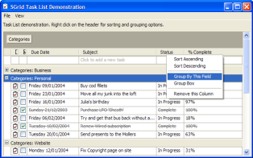
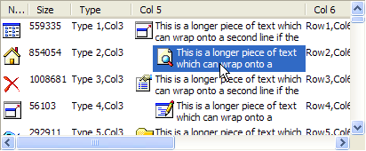
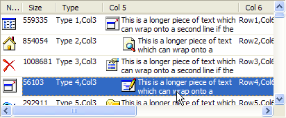
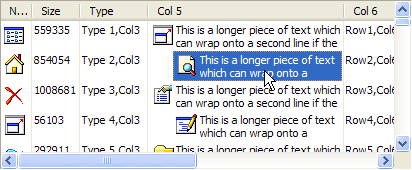
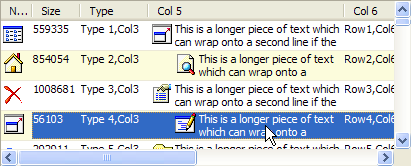
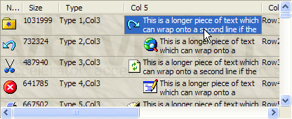
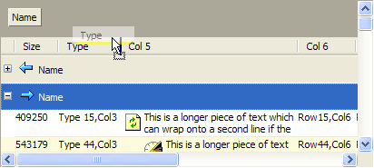
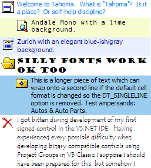

24 Jan 2004
24 Jan 2004
First Posted
 Win32 Hooks in VB - The vbAccelerator Hook Library
Win32 Hooks in VB - The vbAccelerator Hook Library

S-Grid 2.0 Features
This article provides a rundown of the new features and updates provided in S-Grid 2.0, and also shows samples of the types of displays that can be set up using the control.
Changes and Bug Fixes Compared to S-Grid 1
S-Grid 2.0 offers a wealth of new features, performance improvements and fixes some bugs with the previous version. The changes are as follows:
- New Features and Behaviours
- AllowGrouping property allows Outlook-style hierarchical grouping of data, complete with drag-drop grouping using the column headers. The grouping area can also be made invisible and groupings set up programmatically.
- SplitRow property allows one or more rows to be fixed within the grid so they always display at the top of the grid.
- Determining when Edit mode is exited is now done using a Windows Mouse Hook, and activation loss is detected using the WM_ACTIVATEAPP message. This makes entering and exiting edit mode much more robust.
- A PreCancelEdit event is now offered, allowing validation of data prior to leaving edit mode.
- The new SingleClickEdit property allows the grid to automatically enter edit mode whenever a cell is selected.
- Hot-Tracking of grid cells can be enabled using the HotTrack property.
- Marquee-style selection is now supported for multi-select grids in row-mode.
- MouseWheel scrolling is now supported.
- System colour/display change events are now detected and colours updated accordingly.
- Columns can be set to have fixed width using the bFixedWidth parameter of the AddColumn method which prevents them from being resized.
- Appearance
- Customised owner-drawn cells can now be created by implementing the IGridCellOwnerDraw interface.
- Grid lines are now more customisable: horizontal or vertical grid lines can be switched of using the NoHorizontalGridLines and NoVerticalGridLines properties.
- The GridLineMode can be set to auto-fill grid lines in any spaces in the control.
- A separate ImageList can now be specified for the Header.
- VB6 ImageLists are now supported (although not for the header).
- The out-of-focus highlight foreground and background colours can be set.
- The Selection rectangle can be alpha-blended and/or outlined with the background colour.
- Alternate row background colour can be set.
- XP styles/manifests now supported without needing to use the hack to prevent shutdown crashes.
- Performance
The control now allocates row data memory in chunks and uses row indirection to the main data in the grid. Row indexes are inserted and deleted from their array using the CopyMemory technique described here for performance.
- Sorting is 2 - 10x faster as only the row pointers are sorted, not the data.
- Inserting and removing rows is 10x faster as only the row pointers need to be changed.
- Addition of items performs the same if rows are preallocated using the Rows property, if not it can be up to 100% faster.
More performance information, including comparisons with ListViews and FlexGrids, is available in the S-Grid 2 Performance article.
- Bug Fixes
- Scroll bars appear when control is first shown.
- Control now draws correctly when it is wider than a single screen (previously it was truncated).
- When using the left and right arrow keys in row mode, the control no longer tries to scroll when the scroll bars are hidden.
- The display has been tightened up to fix focus rectangle and selection box positioning.
- The grid now fits exactly into the space, rather than having a border between its edge and the scroll bars.
- Right clicking in the control used to cause the selection to be cleared. Now the control maintains the selection if you right click into it, otherwise the new cell is selected. This mirrors the behaviour of Outlook.
- The middle mouse button is now ignored by default (previously it acted as if it was the left mouse button).
- Text drawing now uses the Unicode API calls under NT and above.
- The control is no longer an ActiveX Control Container and hence can be used in applications which do not support these types of controls.
Display samples
These images show some of the displays you can achieve using S-Grid 2.0:
Standard S-Grid 2.0 Rendering

With Horizontal GridLines only

With Vertical GridLines only

Using the AlternateRowColour property

With a Background Image

With Outlook-Style Grouping enabled

Each cell can have its own font and/or colours